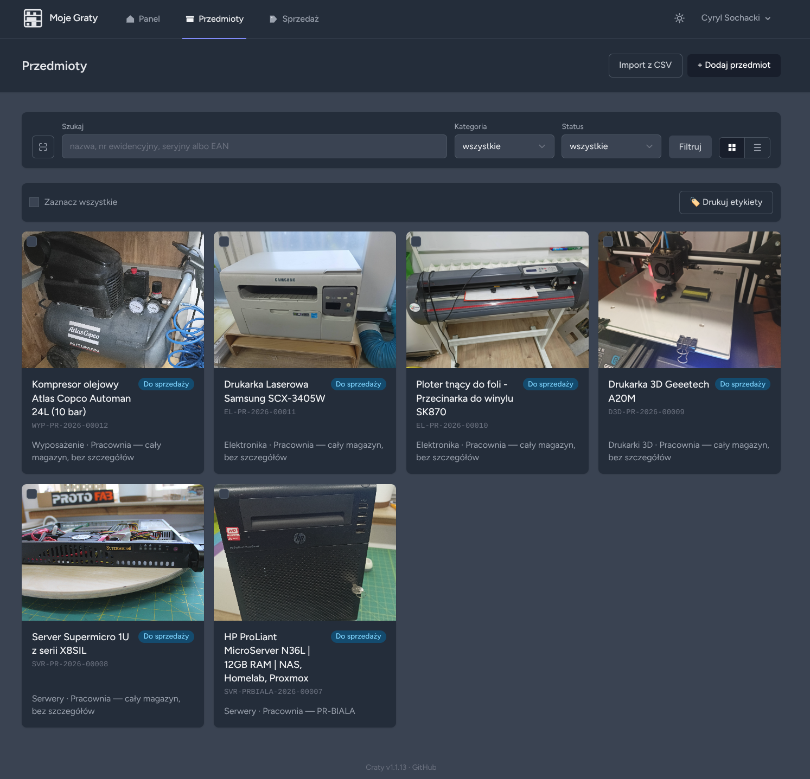

Workshop and makerspace
Power tools, accessories, materials and small parts in bins. You know what is in stock, what is being repaired and what you lent to whom.
Craty is a simple app that brings order to your gear. Every thing gets its place, a number and a QR sticker, so instead of digging through three boxes you check your phone and know. In a workshop, a small warehouse or at home.
Open source (MIT) · runs on ordinary PHP hosting or Docker · English and Polish

Power tools, accessories, materials and small parts in bins. You know what is in stock, what is being repaired and what you lent to whom.
Tools, sports gear, holiday decorations, cables kept “just in case”. Take a photo, pick the shelf and stop searching blindly.
Hackerspaces, associations, clubs, small companies where several people share equipment. Accounts for the team and a clear history of who changed what.
Warehouse, room, rack, shelf, bin. All in one clear tree, and a stocktake shows what is missing from a rack and what is lying in the wrong place.
Every item gets a number and a QR code. Print the sticker on an ordinary label printer, in a few sizes to choose from.
Craty installs on your phone like an app. Scan a sticker or the barcode on the packaging and the item's page opens straight away; scan a series to collect several items at once.
Who, when and until when, single items or whole kits, with reservations, a contacts list and ready-to-sign PDF handover and return protocols. Overdue loans show on the dashboard, and Craty can remind you by email.
Photos, invoices, manuals and warranties on every item. Serial number and value too, in case of theft or damage.
Who changed what and when: moves, statuses, loans. Plus an optional Service module: repairs with costs, periodic inspections and warranties, with a reminder before the date passes.
Got something you no longer need? Put it on a public page with a description, photos and your contact details, with a link to your listing on marketplaces such as OLX, Allegro or Vinted.
English and Polish, light and dark theme, import from a CSV spreadsheet, several accounts with different permissions. Optionally, consumables counted in pieces or metres, with a warning when they run low.
A new version is a package you upload from the admin panel. No SSH, no terminal, no calling your IT person. With Docker, just pull the new image.
The QR code on the sticker leads straight to the item's page: photos, where it is, whether someone borrowed it and what it is worth. Works with any phone with a camera, no extra apps to install.
ELN-M1-2026-00042
Craty is and will remain a simple inventory app. It will never grow into a shop with a cart and payments, and that's fine, because that's not what it was made for.
The latest version is waiting under Releases on GitHub, as a single .zip file with everything inside.
Unpack it on ordinary hosting with PHP and a MySQL or MariaDB database. No SSH, Composer or terminal needed.
Open the site in your browser. The wizard checks the server, connects the database, creates the administrator account and optionally loads sample data.
Requirements: PHP 8.3+ MySQL 8+ / MariaDB 10.3+ Apache with mod_rewrite HTTPS (for camera scanning). Details: README on GitHub.
Got a server with Docker, a NAS or a Raspberry Pi? The app and its database in one container, one command: docker run -d -p 8000:8000 -v craty-data:/var/www/html/app-storage ghcr.io/cyryllo/craty, then open http://localhost:8000 and run the wizard.
Craty is a young project developed after hours. What helps it most is people who use it every day and say what works and what doesn't. No programming skills needed.
Describe it in a short form. A screenshot and the version number from the footer help a lot.
Report a bug →Missing something for keeping your gear in order? Describe it with a real-life example; every good idea will be considered.
Suggest a feature →A star on GitHub and a recommendation to friends from your workshop, hackerspace or DIY group.
Go to GitHub →You can report in English or Polish. Do you code? Pull requests are welcome; for a bigger change, describe it in an issue first.
Craty is free and open. Download it, install it, put on your first sticker.